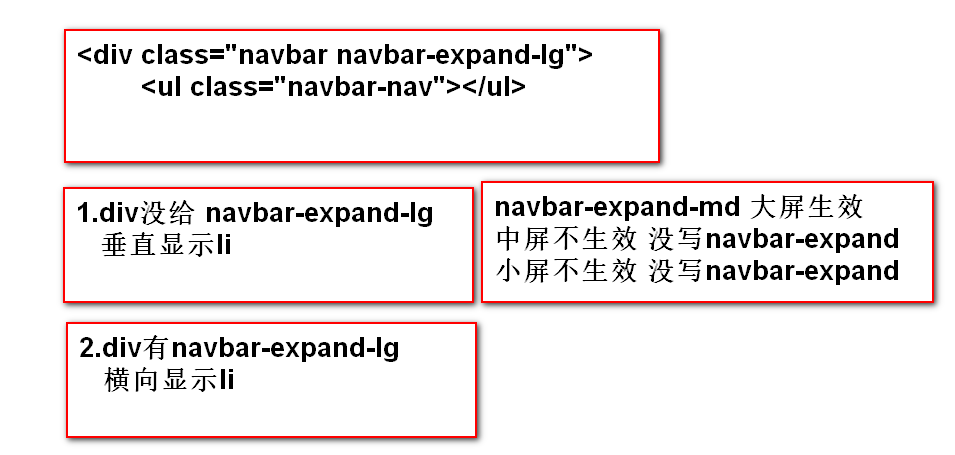
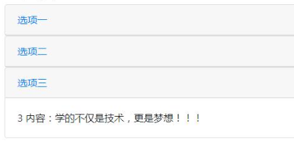
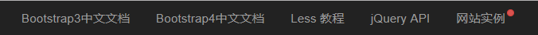
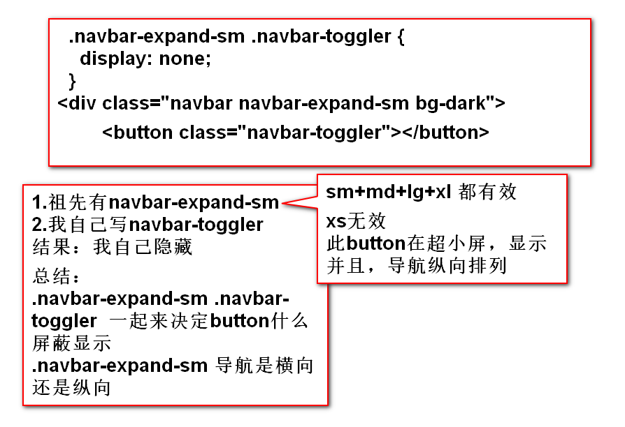

4.导航
③胶囊导航
< ul class="nav nav-pills" >
< li class="nav-item" >
< a data-toggle="pill" href="#tab1" class="nav-link" >口红< /a >
< /li >
< /ul >
< div class="tab-content" >
< div id="tab1" class="tab-pane" >
YSL,Dior,chanel,故宫
< /div >
< /div >
ul的nav-tabs改成nav-pills
a的data-toggle="tab" 改成data-toggle="pill"
其他与选项卡导航一样
5.导航栏
< h1 >导航栏< /h1 >
< div class="navbar navbar-expand-lg" >
< ul class="navbar-nav" >
< li class="nav-item" >< a class="nav-link" href="" >长的丑< /a >< /li >
< /ul >
< /div >
最外层div.navbar.navbar-expand-xl/lg/md/sm
.navbar-expand-xl/lg/md/sm作用，作为子元素ul.navbar-nav的选择器条件，让ul.navbar-nav的主轴方向从y轴变成x轴(ul.navbar-nav原本主轴方向是y轴)

响应式的导航栏，以.navbar-expand-lg为例
超大屏，大屏，li横向显示
中屏，小屏，li纵向显示
div.navbar-expand-* 配合 ul.navbar-nav可以让导航栏在不同屏幕下，横向或者纵向显示
6.折叠效果
< button data-target="#demo" data-toggle="collapse" class="btn btn-info" >折叠< /button >
< div id="demo" class="collapse" >Lorem
折叠，需要折叠内容添加.collapse--->display:none
折叠事件 data-toggle="collapse"
折叠目标
如果使用a,就可以使用href=""
如果使用button,则使用data-target=""
7.卡片
< div class="card" >
< div class="card-header" >< /div >
< div class="card-body" >< /div >
< div class="card-footer" >< /div >
< /div >
8.卡片+折叠=手风琴
< div id="parent" >
< div class="card" >
< div class="card-header" >
< a data-toggle="collapse"
href="#one" class="card-link" >折叠< /a >
< /div >
< div id="one" data-parent="#parent"
class="collapse" >
< iv class="card-body" >内容< /div >
< /div >
< /div >
< /div >
总结：
1. .collapse不能和.card-body在同一个标签上
不然会发生折叠/显示的卡顿
解决方案 div.collapse>div.card-body
2.多个折叠部分，可以同时打开，而不是开启一个，其他的关闭
解决方案，在所有的card外部，添加一个父元素div#parent
在所有的div.collapse上添加自定义属性
data-parent="#parent"
这样就可以保证，在外层div中，只存在一个折叠区域被打开
练习1：

练习2：响应式导航栏，中屏，小屏 垂直排列

9.折叠导航栏
1.div.navbar-expand-sm和.anvabar-toggler的关系和作用

2.在外层div中.navbar-dark/light的作用
这个类对本div没有任何修饰
修饰的是后代元素的字体颜色
3..navbar-collapse的作用
.navbar-expand-sm .navbar-collapse配合
让ul的父级div在sm/md/lg/xl下显示
在xs下，ul的父级div执行.collapse的样式，隐藏
4.小总结 .navbar-expand-sm决定了几件事？
1.按钮在sm以上隐藏，在sm以下显示
2.ul在sm以上横向显示，在sm以下垂直显示
3.折叠的div在sm以上显示，在sm以下隐藏
10.媒体对象
boot提供了很多类，来处理媒体相关的对象
图片 影音
< div class="media" >
< img >
< div class="media-body" >< div >
< /div >
11.焦点轮播图
1.轮播图结构
div.carousel data-ride="carousel" 相对定位
>div.carousel-inner w100 溢出隐藏
>div.carousel-item display:none
>img
2.左右箭头
a.carousel-control-prev/next 宽度，背景，位置
>span. carousel-control-prev/next-icon 左右箭头
需要重写.carousel-control-prev/next中的宽高，位置
.carousel-control-prev,
.carousel-control-next{
width:4%;height: 20%;
background:#aaa;
border-radius: 0.25rem;
top:40%;
}
a标签要添加自定义属性 data-slide="prev/next"
事件的目标是最外层div#demo href="#demo"
3.轮播指示器
ul.carousel-indicators 绝对定位，横向弹性
>li 宽高，背景色，外边距
我们需要重写li的样式
.carousel-indicators li{
width: 0.75rem;height:0.75rem;
background-color:#fff;
border-radius: 50%;
margin:0 4px;
}
如果让li有被选中的状态，需要第一个li添加.active
我们需要重写.active
.carousel-indicators .active{
background-color:#0aa1ed;
}
点击li激活事件
data-slide-to="图片下标" 下标从0开始
事件改变的目标
data-target="#demo" 整个轮播最外层div的id
12.模态框
覆盖在父窗体上的一个子窗体，用于与用户做一些互动
div.modal>div.modal-dialog>div.modal-content
>div.modal-header+div.modal-body+div.modal-footer
关闭的事件
button data-dismiss="modal"